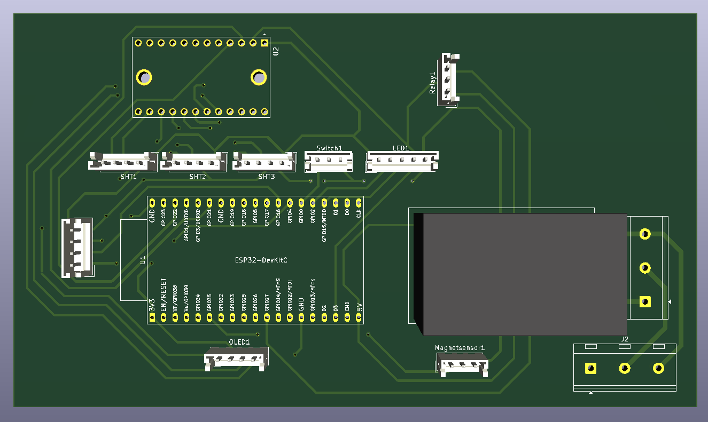
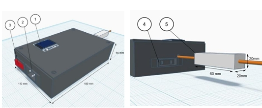
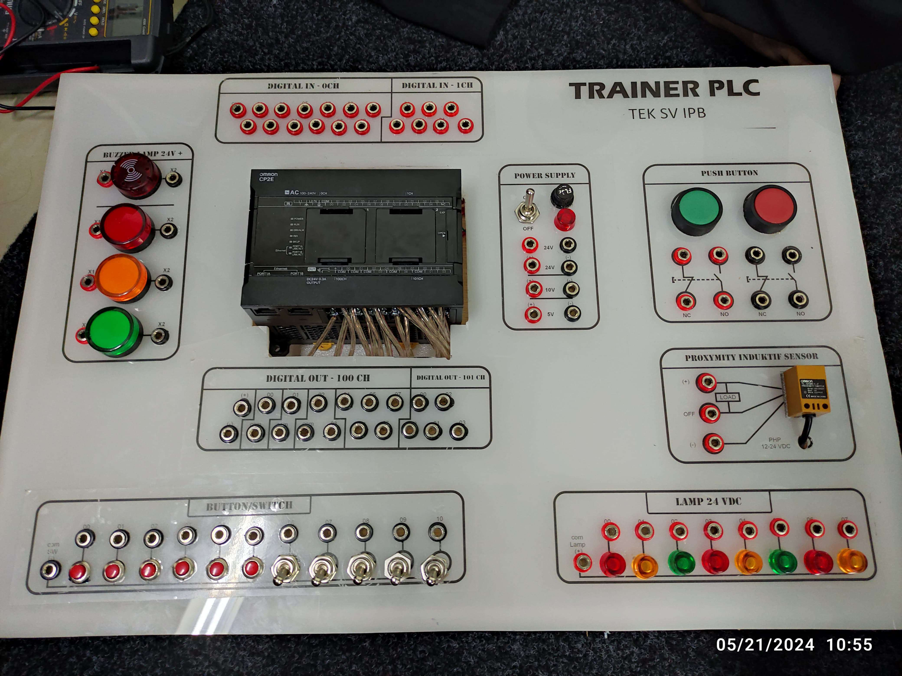
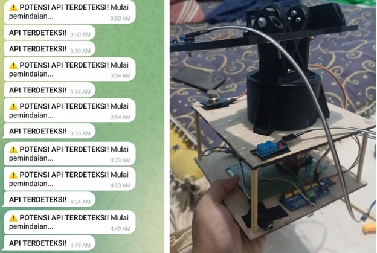
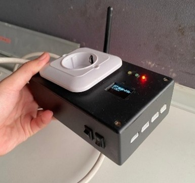
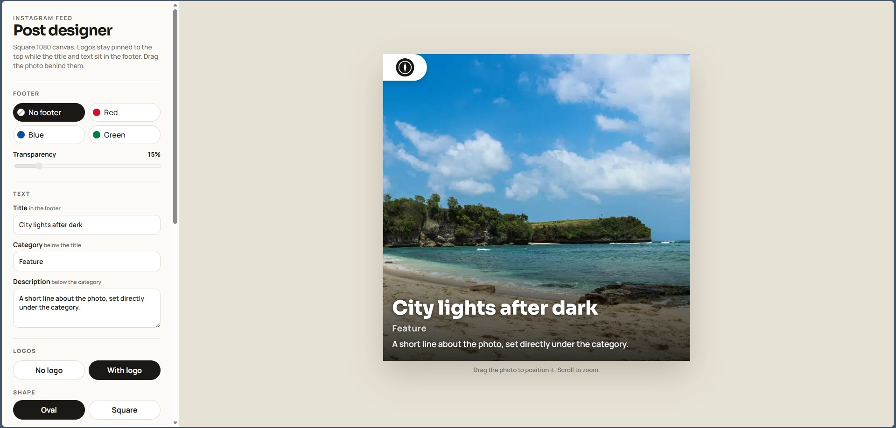
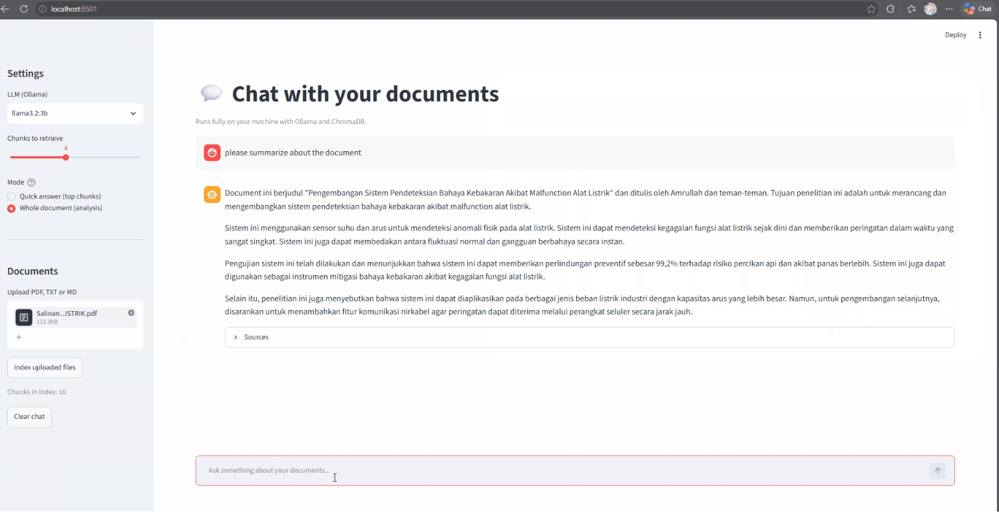

Skematik di KiCad
Mengimplementasikan skematik rangkaian elektronik pada aplikasi KiCad.
Nama saya Asyahdan Amrullah, lulusan Sekolah Vokasi IPB Program Studi Teknologi Rekayasa Komputer. Saya memiliki minat di bidang jaringan komputer, Internet of Things (IoT), robotika, dan Artificial Intelligence (AI), khususnya AI Agent dan Large Language Models (LLM). Saya tertarik mengeksplorasi perkembangan teknologi dan mengembangkan solusi inovatif. Memiliki kemampuan bekerja secara mandiri maupun dalam tim, serta semangat untuk terus belajar, mengembangkan keterampilan, dan memperoleh pengalaman profesional di bidang teknologi.
Saat berkuliah di Sekolah Vokasi IPB, saya telah mempelajari beberapa skill berikut:

Mengimplementasikan skematik rangkaian elektronik pada aplikasi KiCad.

Membuat desain 3D pada Tinkercad.

Membuat proyek IoT skala kecil hingga besar, baik dalam tim maupun individu.

Sistem pemantauan suhu gudang berbasis IoT dengan sensor inframerah, data real-time ke Firebase, dan notifikasi otomatis lewat Telegram.
GitHub →
Perancangan skematik dengan Fritzing dan perakitan perangkat untuk sistem monitoring server berbasis IoT (Telkomsat).
GitHub →
Web statis untuk mendesain postingan Instagram.
GitHub →
Asisten tanya-jawab dokumen yang berjalan sepenuhnya offline di laptop sendiri, dibuat dengan Ollama, ChromaDB, dan Streamlit. Mendukung bahasa Indonesia dan Inggris.
GitHub →Berkontribusi pada proyek sistem monitoring server berbasis IoT: perancangan skematik dengan Fritzing dan perakitan alat sesuai skematik.
Membangun sistem pemantauan suhu gudang berbasis IoT dan mendukung tim HRD dalam administrasi, pengarsipan dokumen, dan rekap data.
Program Studi Teknologi Rekayasa Komputer.
Tertarik berkolaborasi atau ingin berdiskusi? Hubungi saya lewat: